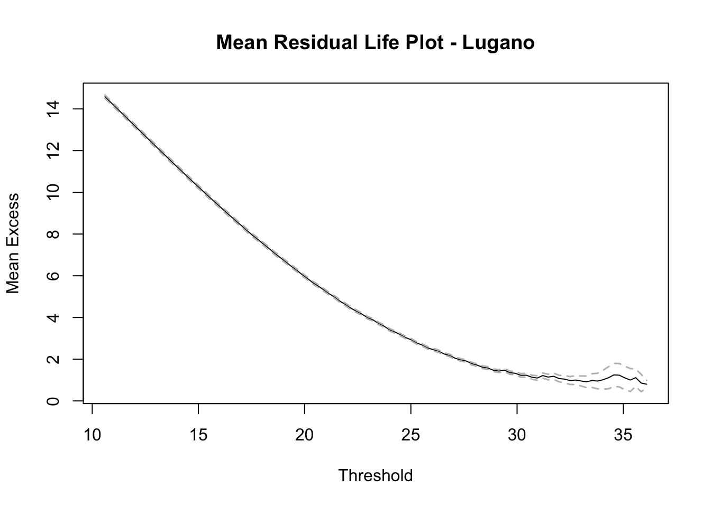
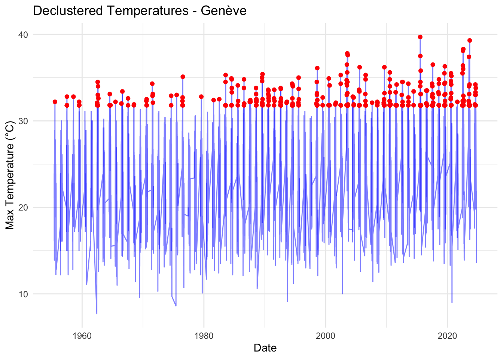

# Convert the date column to Date format
stations_data$DATE <- as.Date(stations_data$DATE, format = "%Y-%m-%d")
# Filter the data starting from the date "1955-01-01"
stations_data <- subset(stations_data, DATE >= as.Date("1955-01-01"))Part 2: Seasonal and Clustering Analysis
First we will explore the data and visualize the maximum temperatures over time for each station.
We can then create plots to visualize the maximum temperatures over time for each station.
We can also create histograms to visualize the distribution of maximum temperatures for each station.
This part clean the data by removing rows with missing values for the TMAX column and then split the data by station.
# Remove only rows where TMAX is NA
stations_data <- stations_data[!is.na(stations_data$TMAX), ]
# Split the data by station
lugano_data <- subset(stations_data, NAME == "Lugano")
genève_data <- subset(stations_data, NAME == "Genève")
saentis_data <- subset(stations_data, NAME == "Saentis")
# Number of rows for each station
rows_l <- nrow(lugano_data)
rows_g <- nrow(genève_data)
rows_s <- nrow(saentis_data)We see that we have 25397 rows for Lugano, 25334 rows for Genève, and 25462 rows for Säntis.
As we are interested at heatwaves, we’ll only focus on the summer period. We’ll filter the data for the months of June, July, August, and September.
# Filter summer data per station
lugano_summer <- subset(lugano_data, format(DATE, "%m") %in% c("06", "07", "08", "09"))
genève_summer <- subset(genève_data, format(DATE, "%m") %in% c("06", "07", "08", "09"))
saentis_summer <- subset(saentis_data, format(DATE, "%m") %in% c("06", "07", "08", "09"))Let’s visualize the evolution of summer maximum temperatures for each station.


Cluster analysis
We can now focus on the clustering analysis of extreme temperature events. We will define a threshold for extreme temperatures based on the 95th percentile of summer maximum temperatures for each station.
# Calculate thresholds for each station
threshold_lugano <- quantile(lugano_summer$TMAX, 0.95, na.rm = TRUE)
threshold_genève <- quantile(genève_summer$TMAX, 0.95, na.rm = TRUE)
threshold_saentis <- quantile(saentis_summer$TMAX, 0.95, na.rm = TRUE)The thresholds for Lugano is 30.8, for Genève is 31.8, and for Säntis is 15. We can now validate with Mean Residual Life (MRL) plots this results.


The Mean Residual Life (MRL) plot is used to validate the choice of thresholds for defining extreme events. It shows the mean excess, or the average amount by which temperatures exceed a threshold, as the threshold increases. For Geneva for example, in the plot, the curve decreases steeply at lower thresholds, indicating the inclusion of non-extreme values. Around 31°C, the curve stabilizes, suggesting this is a suitable threshold for defining extremes. The stability and narrow confidence bands confirm the reliability of this threshold. At higher thresholds, wider confidence intervals indicate less reliable estimates, further supporting the choice of 31°C as appropriate for the analysis.
# Identify extreme days for Lugano
lugano_extreme_days <- lugano_summer[lugano_summer$TMAX > threshold_lugano, ]
# Identify extreme days for Genève
geneve_extreme_days <- genève_summer[genève_summer$TMAX > threshold_genève, ]
# Identify extreme days for Säntis
saentis_extreme_days <- saentis_summer[saentis_summer$TMAX > threshold_saentis, ]The number of extreme days above the chosen threshold provides a measure of the frequency of extreme events at each station. For example, Lugano has 406 extreme days, Geneva has 413, and Säntis has 413. These counts indicate the occurrence of extreme temperatures during the summer months, with Säntis experiencing the highest number of extreme days among the three stations.
# Calculation of the extremal index for each station
extremal_index_lugano <- extremalindex(lugano_summer$TMAX, threshold = threshold_lugano)
extremal_index_geneve <- extremalindex(genève_summer$TMAX, threshold = threshold_genève)
extremal_index_saentis <- extremalindex(saentis_summer$TMAX, threshold = threshold_saentis)
cat("Extremal index for Lugano:", extremal_index_lugano, "\n")Extremal index for Lugano: 0.2007176 80 17 cat("Extremal index for Genève:", extremal_index_geneve, "\n")Extremal index for Genève: 0.2699455 112 8 cat("Extremal index for Säntis:", extremal_index_saentis, "\n")Extremal index for Säntis: 0.3572708 148 8 These results represent the extremal index calculations for each station, which measure the tendency of extreme events to occur in clusters. Here’s what the numbers mean:
Extremal Index (First Number): For Lugano: 0.2, for Geneva 0.27, and for Säntis 0.36. The extremal index ranges between 0 and 1. A value close to 0 indicates that extreme events are strongly clustered. A value closer to 1 suggests that extreme events are more isolated and independent. In this case, Lugano shows the most clustering of extremes (lowest index), while Säntis has more independent extreme events (highest index).
Number of Clusters (Second Number): For Lugano, we get 80, for Geneva 112, and for Säntis 148. This indicates the number of distinct clusters of extreme events detected for each station. More clusters suggest a higher frequency of extremes occurring over the studied period. This indicates the number of distinct clusters of extreme events detected for each station. More clusters suggest a higher frequency of extremes occurring over the studied period.
Run Length (Third Number): For Lugano: 17, for Geneva 8, and for Säntis 8. This reflects the “run parameter,” which defines the minimum separation between events for them to be considered independent clusters. Higher values mean the analysis allows for longer gaps between clustered events.
Interpretation Lugano’s low extremal index (0.2007), combined with a relatively low number of clusters (80), indicates strongly clustered extreme events. Genève has a slightly higher extremal index (0.2699) and more clusters (112), suggesting less clustering than Lugano. Säntis shows the highest extremal index (0.3573) and the most clusters (148), indicating that extremes here are more independent and less likely to occur in tightly grouped clusters. These differences likely reflect local climatic and geographic conditions influencing how extreme temperatures occur.
We can now proceed to decluster the data to remove dependencies between extreme events.
# Decluster the data using the chosen threshold for each station
lugano_declustered <- decluster(lugano_summer$TMAX, threshold = threshold_lugano, run.length = 1)
genève_declustered <- decluster(genève_summer$TMAX, threshold = threshold_genève, run.length = 1)
saentis_declustered <- decluster(saentis_summer$TMAX, threshold = threshold_saentis, run.length = 1)
# Add the declustered data to the corresponding datasets
lugano_summer$Declustered <- ifelse(lugano_summer$TMAX >= threshold_lugano, lugano_declustered, NA)
genève_summer$Declustered <- ifelse(genève_summer$TMAX >= threshold_genève, genève_declustered, NA)
saentis_summer$Declustered <- ifelse(saentis_summer$TMAX >= threshold_saentis, saentis_declustered, NA)We have now declustered the extreme temperature data for each station and we can visualize the results.

Explanation Objective: Declustering helps remove dependencies between extreme events that occur in close succession, ensuring that only independent extreme events are considered for further analysis. This is important for correctly modeling extreme behavior and deriving accurate probabilities for rare events.
Steps:
Threshold Selection: Using the thresholds previously validated with the Mean Residual Life (MRL) plot, we identify extreme events for each station.
Declustering: Using the decluster function from the extRemes package, we filter the extreme values such that only the first event in each cluster is retained. The run.length parameter determines the minimum separation in days between clusters. For example, a run.length of 1 means any extreme values occurring consecutively are considered part of the same cluster.
Visualization: The gray line represents the original maximum temperatures over time. The red, blue, or green points represent the declustered extreme values. These are independent extremes retained after declustering. The resulting plot allows us to visually verify how declustering isolates the independent extremes while removing consecutive dependencies.